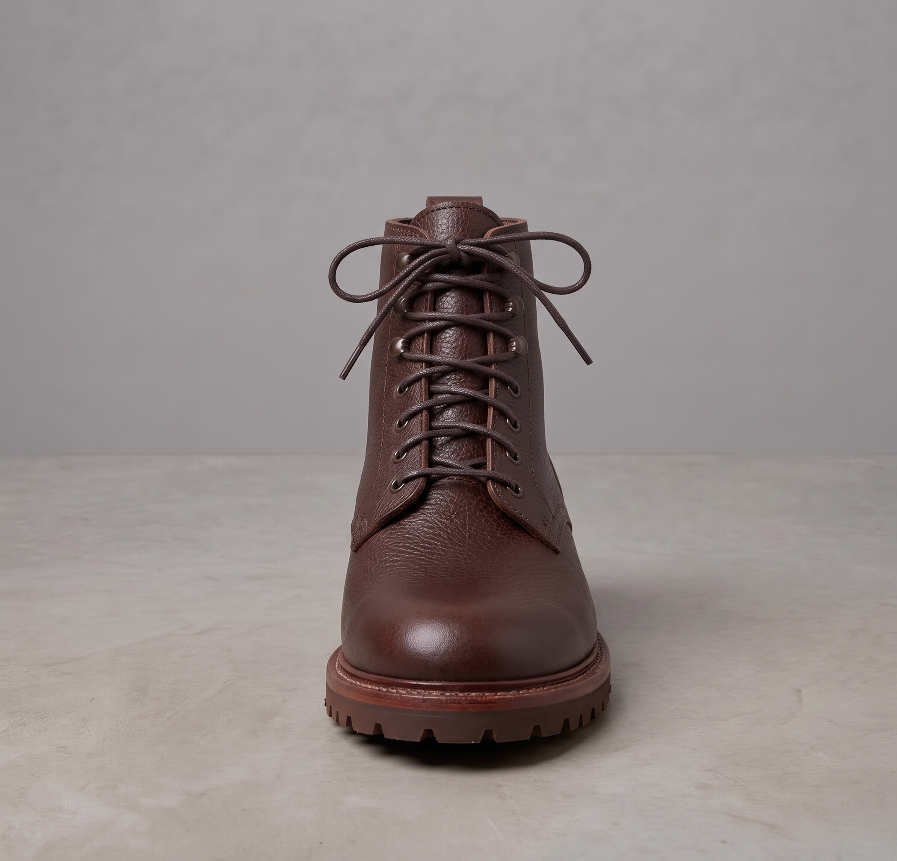
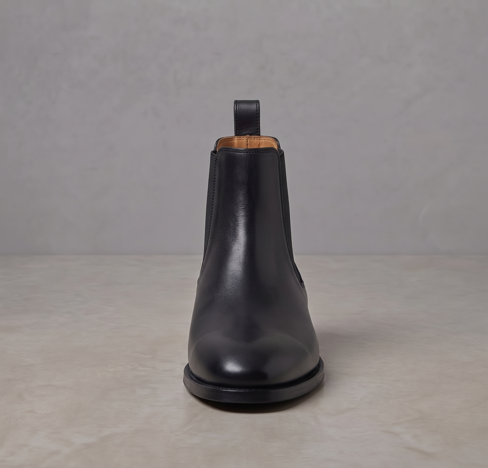
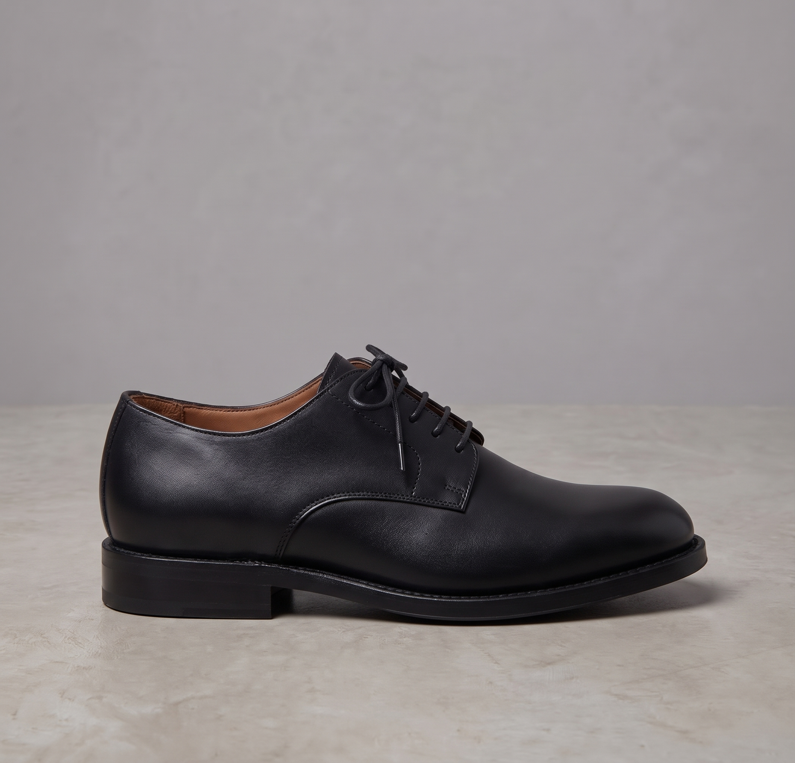
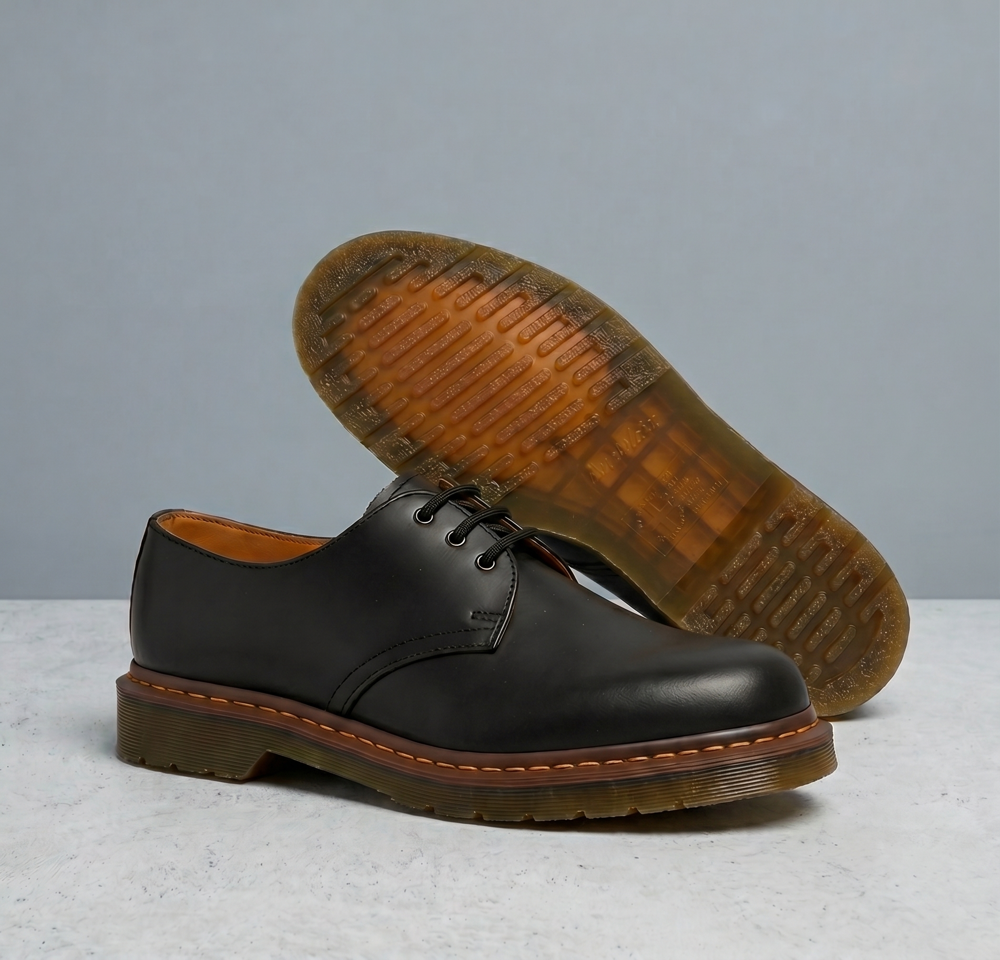
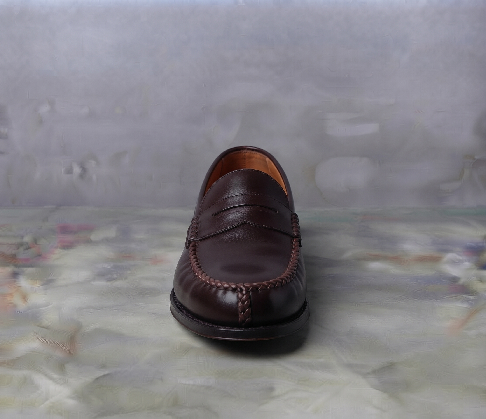

Website e-commerce & custom leather shoes · 28 October 2026
A warm heritage editorial system for daily casual leather — built to explain the craft, guide the customizer, and earn the sale.
This brief translates the visual direction in the moodboard into page requirements, design system rules, content needs, and acceptance criteria for the MVP. It is the shared reference between client, designer, and developer before wireframe and high-fidelity mockup.





SHOESHOP.ID adalah toko online sepatu kulit lokal dengan dua jalur: preset design dan custom made-to-order. Situs harus terasa seperti brand craft yang matang, tetapi tetap mudah dipakai oleh pembeli muda yang baru pertama kali membeli sepatu kulit.
Project snapshot
Tujuan
Meluncurkan MVP yang bisa menerima pesanan preset & custom, menurunkan pertanyaan berulang ke CS, dan membangun kepercayaan pada kualitas serta proses produksi.
Menyatukan tujuh referensi menjadi satu sistem visual yang konsisten, mudah diimplementasikan di React + Tailwind, dan bisa tumbuh ke fitur V2 tanpa redesign.
Membantu pembeli menemukan model, memahami bahan, memesan ukuran dengan yakin, dan melihat progres pesanan tanpa harus bertanya lewat chat.
Customizer selesai < 5 menit, add-to-cart naik, pertanyaan ukuran turun, dan 80% pengguna yang membuka halaman craft melanjutkan ke katalog.
Batasan & asumsi
Mobile-first pada 390px. Mayoritas trafik datang dari Instagram dan TikTok, jadi hero, produk, dan customizer harus selesai dengan satu tangan.
Foto produk existing dipakai sebagai placeholder. Foto craft, lifestyle, dan video unboxing masuk bertahap tanpa mengubah layout.
Laravel + Inertia + React + Tailwind. Customizer 2D berbasis layer; harga dihitung di server dan diperbarui tanpa reload.
Produksi ± 7 hari kerja, verifikasi ukuran manual, dan DP 50% sebelum pesanan masuk antrean. Status diupdate admin per tahap.
Keputusan yang sudah dikunci
Primary audience
Untuk pria yang ingin sepatu kulit berkarakter tetapi bisa dipakai setiap hari, SHOESHOP.ID membuat sepatu lokal yang bisa dikustom, dibangun dengan konstruksi yang bisa di-re-soling, dan dijelaskan dengan jujur dari bahan sampai proses.
Jobs to be done
Tone of voice
Setiap keputusan visual harus bisa dijelaskan lewat salah satu prinsip ini. Kalau tidak, itu preferensi — bukan kebutuhan.
Setiap klaim kualitas harus punya bukti visual: grain, welt, jahitan, sol, tangan pengrajin. Jangan minta dipercaya tanpa menunjukkan.
Satu model bisa masuk beberapa gaya hidup. Foto dan copy harus menunjukkan konteks pemakaian, bukan mengunci sepatu ke satu persona.
Premium bukan berarti dingin. Gunakan warna hangat, bahasa manusiawi, dan ruang kosong yang mengundang, bukan mengintimidasi.
Customizer punya banyak pilihan. Tampilkan satu keputusan per langkah, jelaskan konsekuensi harga, dan jangan menampilkan semua opsi sekaligus.
Made in Indonesia adalah kekuatan, bukan tempelan. Tampilkan pengrajin dan proses dengan standar editorial yang setara brand internasional.
Halaman cepat, gambar tajam, form jelas, dan tidak ada layout shift. Pengalaman yang lambat merusak persepsi kualitas.
Brand attributes
Do
Don't
| Page | Tujuan | Section wajib | CTA utama | Referensi |
|---|---|---|---|---|
| Home | Membangun rasa percaya dan mengarahkan ke dua jalur: preset atau custom. | Hero editorial · trust strip · collection grid · customizer teaser · craft story · detail gallery · material swatches · press/review · journal · newsletter · final CTA. | Shop the collection / Open 3D studio | 03, 04, 05, 01 |
| Shop | Membantu memilih model tanpa membuat bingung. | Judul & intro · filter (model, gaya, bahan, warna) · sort · grid produk · quick view · empty state · pagination/load more. | View product | 01, 03, 06 |
| Product | Menjawab “apakah ini cocok untuk saya?” dan “apakah kualitasnya sepadan?”. | Galeri (5–6 sudut) · nama & harga · cerita singkat · spesifikasi · size guide link · preset variants · CTA custom · review · shipping & care accordion · sticky buy bar (mobile). | Customize this pair / Add to cart | 03, 05, 06 |
Home · urutan & alasan
| # | Section | Fungsi | Catatan desain |
|---|---|---|---|
| 01 | Hero | Emosi + posisi | Headline serif besar, satu foto arch, dua CTA. Jangan ada carousel. |
| 02 | Trust strip | Kredibilitas cepat | Full grain · Goodyear welt · Made in Indonesia · Re-solable. |
| 03 | Collection | Eksplorasi produk | Grid asimetris 5 model; tiap kartu punya dunia visual sendiri. |
| 04 | Customizer teaser | Diferensiasi | Preview + 3 langkah; jelaskan bahwa 3D/2D dibuka setelah pilih model. |
| 05 | Craft story | Justifikasi harga | Dua feature bergantian; foto proses, bukan studio. |
| 06 | Detail gallery | Bukti material | Scroll horizontal, snap; tanpa scrollbar. |
| 07 | Material swatches | Jembatan ke customizer | 6 warna kulit; klik menuju customizer dengan material terpilih. |
| 08 | Press / review | Sosial proof | Satu baris logo atau 2–3 quote; jangan berlebihan. |
| 09 | Journal | Kedalaman brand | 2–3 artikel; bisa dihide di MVP jika konten belum siap. |
| 10 | Newsletter + final CTA | Konversi | Diskon pertama 10–15%; CTA “Make every step yours.” |
Custom Studio · tiga langkah
Lima kartu model dengan foto, nama, harga mulai, dan catatan outsole. Jelaskan aturan: casual (Boots + Docmart) dan formal (Chelsea + Pantofel + Loafers) memakai bentuk outsole berbeda.
Preview sticky di kiri (desktop) / atas (mobile). Opsi di kanan: 8 elemen, hanya yang relevan untuk model terpilih. Harga berubah real-time dengan breakdown.
Ringkasan desain, material, ukuran, harga, dan estimasi produksi. CTA “Add to cart”. Simpan desain ke akun agar bisa dilihat lagi.
Motif kulit sapi · warna benang jahitan kulit · warna benang outsole · warna eyelet · warna panel elastis (Chelsea) · warna tali · motif storm welt · bentuk outsole. Setiap model hanya menampilkan elemen yang valid.
Loading preview · opsi belum dipilih · kombinasi tidak valid · outsole tidak tersedia untuk model · harga berubah · desain tersimpan · error koneksi. Setiap state harus punya pesan yang menjelaskan langkah berikutnya.
Craft / Our Story
| Section | Isi | Catatan |
|---|---|---|
| Hero | Statement tentang tangan, bahan, dan waktu. | Foto workshop, bukan produk. |
| Origins | Kenapa brand ini ada; hubungan dengan pengrajin lokal. | Nada jujur, tanpa klaim berlebihan. |
| Process | Pola/Cutting → Jahit/Stitching → Soling → QC → Delivery. | Lima langkah, masing-masing satu foto dan satu kalimat. |
| Materials | Kulit, benang, sol, eyelet, storm welt. | Hubungkan ke pilihan di customizer. |
| Artisan | Profil singkat pengrajin; tangan dan alat. | Manusia, bukan “tenaga kerja”. |
| Values | Daya tahan, re-solable, produksi kecil, lokal. | Bukti, bukan slogan. |
| CTA | “Start your pair” / “See the collection”. | Satu CTA di akhir. |
Size guide
| Page | Tujuan | Section wajib | CTA utama |
|---|---|---|---|
| Cart | Memastikan item, desain, ukuran, dan harga sudah benar. | Item preset & custom · ringkasan desain (thumbnail + opsi) · edit design · hapus · catatan DP 50% · subtotal · CTA checkout · empty state. | Continue to checkout |
| Checkout | Menyelesaikan pesanan dengan risiko dan kebingungan minimal. | Kontak · alamat · ongkir real-time · metode bayar QRIS/VA · ringkasan DP 50% & pelunasan · syarat · konfirmasi. | Pay 50% DP |
| Account | Memberi kontrol penuh atas pesanan dan data. | Profil · alamat · daftar pesanan · detail pesanan · invoice · status pembayaran · klaim garansi · reorder. | View order |
| Order tracking | Menjawab “pesanan saya sudah sampai mana?” tanpa chat. | Tracker 5 tahap · tanggal estimasi · status bayar (DP/lunas) · foto progres (jika ada) · tombol hubungi CS · tombol klaim. | Pay remaining balance |
| Auth | Masuk cepat, tanpa menghalangi checkout. | Login · register · reset password · guest checkout (opsional) · error & success states. | Continue |
Checkout · prinsip
DP 50% dan sisa pelunasan ditampilkan sejak cart. Tidak ada biaya kejutan. Ongkir muncul setelah alamat valid.
Satu halaman atau tiga langkah maksimal. Autofill, label jelas, error inline. Jangan minta akun sebelum pembayaran.
Ringkasan item + desain + ukuran + estimasi produksi selalu terlihat. Ada tombol kembali ke customizer tanpa kehilangan desain.
Pembayaran gagal/expired punya halaman pemulihan yang jelas: coba lagi, ganti metode, atau hubungi CS.
Order tracking · lima tahap
Colour tokens
| Token | Hex | Pakai untuk |
|---|---|---|
| paper | #F2EBD0 | Background utama |
| ivory | #F7F2E3 | Surface, kartu |
| stone | #D8D8C0 | Image bg, divider |
| moss | #909078 | Meta, caption |
| ink | #303018 | Teks utama, tombol |
| espresso | #3B2722 | Body text |
| leather | #604848 | Accent utama |
| cognac | #A47148 | Accent sekunder |
| brass | #C9A24A | Detail & highlight |
| forest | #3C4A3A | Craft section |
| rust | #A9502E | Street/boot accent |
Type & spacing
| Token | Nilai | Catatan |
|---|---|---|
| font.display | Playfair Display | 400–500, italic accent |
| font.body | Inter | 300–600 |
| font.label | DM Mono | tracking .08–.18em |
| space | 4 · 8 · 12 · 16 · 24 · 32 · 48 · 64 · 96 | Kelipatan 4px |
| radius.pill | 999px | Tombol, foto arch |
| radius.card | 2–4px | Kartu, input |
| border | 1px | Garis, bukan shadow |
| shadow | none | Kecuali overlay/modal |
| container | 1120–1240px | 12 kolom, gutter 24px |
| breakpoint | 480 / 768 / 1024 / 1280 | Mobile-first |
| motion | 400–600ms | cubic-bezier(.2,.8,.2,1) |
Component inventory
Accessibility · WCAG AA
Responsive
Performance budget
UX writing · contoh
| Konteks | Jangan | Gunakan |
|---|---|---|
| Ukuran | “Ukuran salah? Bukan tanggung jawab kami.” | “Ukuran belum diverifikasi. Unggah foto jejak kaki atau pilih chart standar.” |
| DP | “Bayar sekarang.” | “Bayar DP 50% untuk memulai produksi. Sisa 50% saat sepatu siap.” |
| Customizer | “Pilih opsi.” | “Pilih warna benang. Harga bertambah Rp 25.000.” |
| Tracking | “Status: proses.” | “Tahap 3 dari 5 — Soling. Update terakhir 2 hari lalu.” |
| Klaim | “Kirim bukti.” | “Unggah video unboxing (maks. 60 detik) dan foto ukuran sepatu.” |
Asset checklist
| Asset | Jumlah minimum | Spesifikasi | Pemilik |
|---|---|---|---|
| Product photo | 5 model × 6 sudut | 2000px+, natural light, background netral | Klien / fotografer |
| Detail macro | 8–12 foto | Grain, welt, sol, jahitan, eyelet | Fotografer |
| Lifestyle | 6–10 foto | Model muda (casual) & matang (formal) | Klien / fotografer |
| Craft documentary | 10–15 foto + 1 video | Tangan, alat, last, workshop, QC | Klien / videografer |
| Packaging / unboxing | 3–5 foto + 1 video | Untuk halaman garansi & kepercayaan | Klien |
| Brand identity | Logo, warna, font | SVG + guideline | Klien / desainer |
| Copy | Home, 5 produk, craft, size, FAQ | Headline EN, body ID | Copywriter / klien |
| Legal & policies | Shipping, return, warranty, privacy | Bahasa Indonesia | Klien |
Reference mapping · keputusan desain
| Keputusan | Mengambil dari | Alasan |
|---|---|---|
| Hero editorial + serif besar | Edward Green, John Lobb, Crockett & Jones | Membangun rasa premium dan craft tanpa banyak ornamen. |
| Grid koleksi + best seller | Beckett Simonon, Berwick 1707 | Memudahkan eksplorasi produk dan konversi. |
| Navigasi berbasis material | RUJO | Cocok untuk brand kulit dan customizer. |
| Education & guides | Crockett & Jones | Mengurangi keraguan dan menambah otoritas. |
| Palet warm heritage | Edward Green, Berwick, John Lobb | Hangat, tactile, dan tidak generik. |
| Trust & conversion | Beckett Simonon, RUJO | Kejelasan alur, garansi, dan sosial proof. |
| Provenance & komunitas | Baxter | Kesan lokal, keluarga, dan jangka panjang. |
| Street energy | RUJO | Hanya untuk Boots/Docmart agar tidak mengganggu formal. |
MVP · Fase 1
V2 · setelah validasi
Design deliverables
Acceptance criteria
Risiko desain & mitigasi
| Risiko | Dampak | Mitigasi |
|---|---|---|
| Aset foto belum siap | Tinggi | Placeholder produk existing; foto asli sebagai update konten. |
| Customizer terlalu kompleks | Tinggi | Satu keputusan per langkah; tampilkan hanya elemen valid; progress jelas. |
| Revisi setelah mockup | Tinggi | Kunci arah di moodboard; 1× revisi batch; selebihnya change request. |
| Mobile performance | Sedang | Image budget, lazy load, fallback static preview, uji di 4G. |
| Copy belum ada | Sedang | Template copy di brief; klien mengisi; jangan menunda desain. |
| Perbedaan persepsi “premium” | Sedang | Gunakan moodboard sebagai acuan; review visual tiap milestone. |